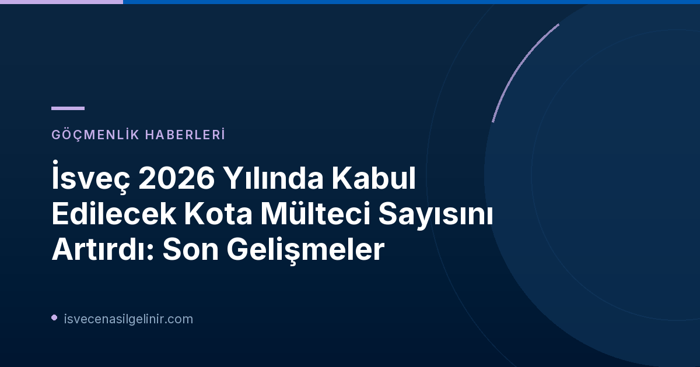

İsveç'ten Kota Mültecileri İçin Yeni Karar: Sayı Artırıldı
İsveç Göçmenlik Dairesi (Migrationsverket) tarafından yapılan son duyuruya göre, 2026 yılı içerisinde İsveç'e kabul edilecek kota mültecisi sayısı yukarı yönlü revize edildi. Daha önce yaklaşık 350 kişi olarak belirlenen bu sayı, güncel değerlendirmeler ışığında 450 ila 500 kişi aralığına yükseltildi. Bu artış, özellikle uluslararası koruma ihtiyacı duyan ve Birleşmiş Milletler Mülteciler Yüksek Komiserliği (UNHCR) tarafından belirlenen kriterlere uyan bireyler için önemli bir gelişmedir.
Önemli Güncelleme: 2026 Kota Mülteci Sayıları
| Değerlendirme Dönemi | Kabul Edilen Kota Mülteci Sayısı (Tahmini) |
|---|---|
| Önceki Değerlendirme | Yaklaşık 350 kişi |
| Güncel Değerlendirme (2026 Yıl Sonu) | 450 - 500 kişi |
| İsveç'in Tam Yıllık Kotası | 900 kişi |
Bu artış, Migrationsverket'in süreçlerdeki netleşme ve UNHCR'nin Acil Transfer Mekanizması kapsamındaki yeni kararlar doğrultusunda gerçekleşmiştir.
Kararın Arka Planı ve Gerekçeleri
Migrationsverket'ten birim şefi Johan Norman'ın açıklamasına göre, kota mültecisi kabul sayısındaki artışın temelinde, mevcut koşulların daha net hale gelmesi ve bu yılki seçimler ile kabul süreçlerine ilişkin ek bilgilerin elde edilmesi yatmaktadır. Norman, "Değerlendirmemiz artık yıl sonuna kadar 450 ila 500 kota mültecisinin kabul edilebileceği yönünde. UNHCR'nin sözde Acil Transfer Mekanizması kapsamındaki Ruanda'daki mültecileri seçme kararını aldıktan sonra değerlendirmeyi güncelledik," ifadelerini kullandı.
Bu mekanizma, özellikle acil korunmaya ihtiyacı olan mültecilerin daha hızlı ve güvenli bir şekilde üçüncü ülkelere yerleştirilmesini amaçlamaktadır. Ruanda'daki mültecilerin bu kapsama alınması, İsveç'in uluslararası sorumluluklarını yerine getirme ve küresel mülteci krizine katkıda bulunma çabasının bir parçasıdır. sverigemedborgarskapsprov.com adresinde İsveç'e göçmenlik ve vatandaşlık süreçleri hakkında detaylı bilgiler bulabilirsiniz.
Yıl Sonu Hedefi ve Tam Kota Sorunu
İsveç'in 2026 yılı için belirlediği toplam mülteci kotası 900 kişi olsa da, bu sayının tamamının yıl sonuna kadar kabul edilemeyeceği belirtiliyor. Migrationsverket, geçen yıl Aralık ayında hükümete 2026 yılına yönelik yerleştirme programı taslağını sunmuştu. Ancak hükümetin bu konudaki kararının beklenden daha geç gelmesi, tüm kotanın transfer edilmesi için gereken süreyi kısıtlamıştır. Bu nedenle, seçim çalışmaları yılın geri kalan süresine uyum sağlayacak şekilde yeniden düzenlenmiştir.
Kota Mültecisi Kabul Süreci Nasıl İşliyor?
İsveç'te kota mültecisi kabul süreci, Migrationsverket ve hükümet arasındaki yakın işbirliği ile yürütülmektedir. Bu süreç aşağıdaki adımları içermektedir:
- Danışma Süreci: Migrationsverket, hangi milletlerden ve gruplardan mültecilerin kabul edileceği ile hangi ülkelerden seçimlerin yapılacağı konusunda hükümetle istişarelerde bulunur.
- Hükümet Yanıtı: Hükümetin danışma sürecine verdiği yanıt beklenir.
- Genel Müdür Kararı: Hükümetin yanıtının ardından, Migrationsverket Genel Müdürü, yılın yeniden yerleştirme programı hakkında nihai kararı verir.
Bu süreç, İsveç'in mülteci politikalarının şeffaf ve belirli kriterlere dayalı bir şekilde yürütülmesini sağlamaktadır. Hükümetin stratejik yönlendirmeleri ile Migrationsverket'in operasyonel kapasitesi birleşerek en fazla ihtiyacı olanlara ulaşılmaya çalışılmaktadır.
Uluslararası anlaşmalar ve insani yardımlar çerçevesinde İsveç'in kota mültecisi programı, küresel mülteci yükünün paylaşılmasına ve zor durumda olan bireylere güvenli bir liman sunulmasına önemli katkılar sağlamaktadır.
Referanslar:
- Migrationsverket Resmi Duyurusu: Upp till 500 kvotflyktingar kan tas emot i år ✅
İsveç'e Göçmenlik ve Vatandaşlık Süreçleri Hakkında Merak Ettikleriniz
İsveç'e göçmenlik, oturum izni başvuruları ve İsveç Vatandaşlık Sınavı gibi konularda detaylı ve güncel bilgilere ulaşmak için sitemizi inceleyin. Uzman danışmanlarımızla iletişime geçerek kişiselleştirilmiş rehberlik alabilirsiniz.